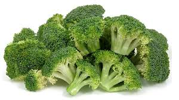

Getting your five-a-day is really important for your health. They give your body the vitamins, minerals and fibre it needs to work at its best, as well as being relatively low in calories.
Almost all fruit and vegetables count towards your 5 a day so it is easier than you think to include them in your diet.
How much is one portion of fresh vegetables?
-
Eight broccoli florets.
 Figure 1.1 : Broccoli. -
14 button mushrooms.
Figure 1.2 : Mushrooms. -
Three heaped tablespoons of root vegetables.
Figure 1.3 : Root vegetables. -
Three heaped tablespoons of peas.
Figure 1.4 : Peas. -
Two heaped handfuls of salad.

Figure 1.5 : Salad. -
Nine okra.
Figure 1.6 : Okra. -
Three heaped tablespoons of sweet corn.
Figure 1.7 : Sweet Corn. -
One fist size sweet potato.

Figure 1.8 : Sweet Potato. -
One whole tomato.

Figure 1.9 : Tomatoes. -
Half an avocado (Remember that avocado pears are high in calories.)
Figure 1.10 : Avocado.